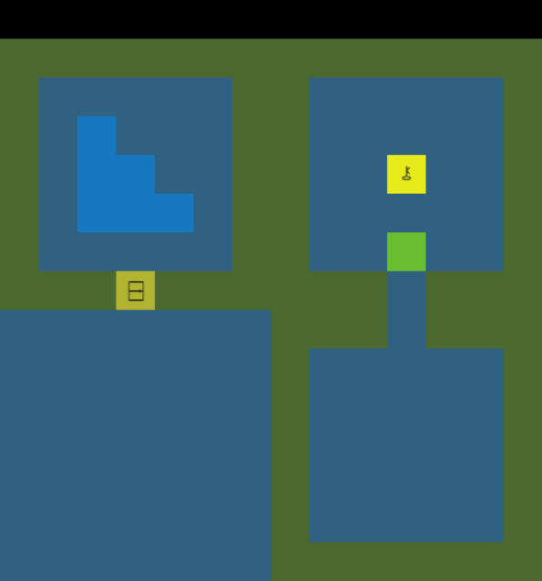
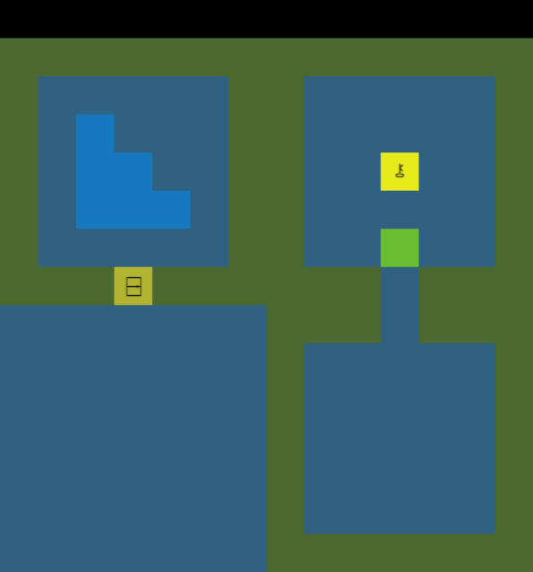
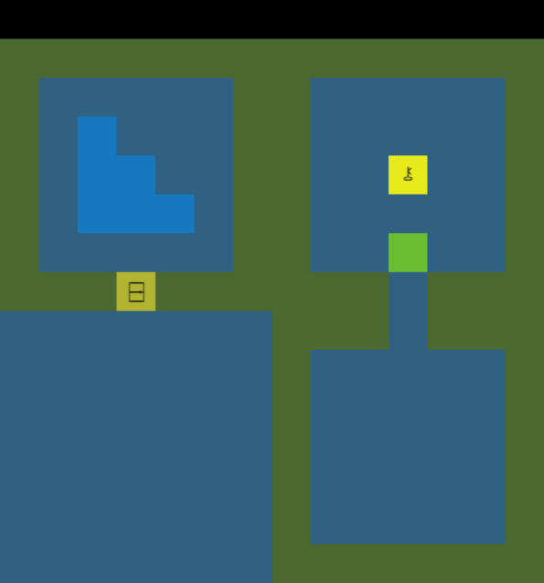
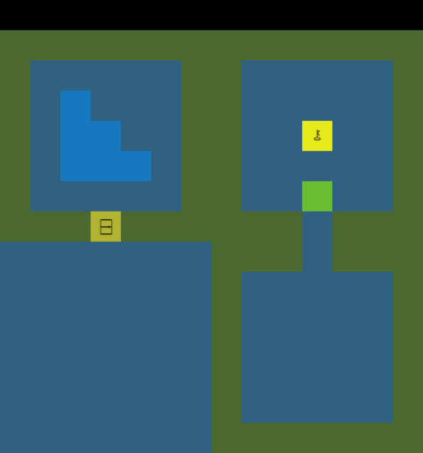

 

My portfolio site, intended to supplement my resume! Since so many of my resume items were digital projects, I figured having a centralized place to be able to see them and learn more if desired was a good idea! And, since that was a significant undertaking, I have included it here as a project I completed. This site was coded by myself entirely through HTML and CSS.
Completed: 2023
Development time: ~1.5 weeks
Languages: HTML, CSS
Tools: Google Chrome, Firefox, Sublime Text, GitHub, GitHub pages, Gimp
Programmer
Designer
A big improvement over the previous portfolio website, which, while solid, was also inconsistently formatted, had a lot of scaling issues, lacked accessibility and SEO, and was generally just coded messily (it was originally made over a few days to apply for internships). This attempt, I took extra time to incorporate what worked about the old one into the new design while spending a lot of time thinking about code structure and ease of reuse for the future; this portfolio should prove significantly more maintainable. I wanted to convey growth, willingness to learn, and my own personality while remaining professional. I also wanted to include some self-reflection through sections such as the "My thoughts" block on each page (you're reading one right now!) since I believe this is one of my stronger traits! Additionally, despite the information density vastly increasing, I think this portfolio is a lot easier to quickly parse due to the segmenting, focus on UX, and hierarchy of information. I also themed the header around brackets to allude to C/C++/C#/Java coding, which I am most familiar with!
See the home page